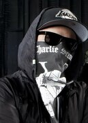

Članovi

Charlie Sceneje rođen u Burbanku u Kaliforniji 3. septembra 1985. Poznavao je budućeg kolegu Funny Man od malih nogu i družili su se redovno dok su odrastali. Čarli se pojavljuje u skoro svakoj pesmi benda. On je klasifikovan kao "gangster" benda. Njegova omiljena pesma je Bullet. Ideja za pesmu mu je došla u taksiju kada je kupovao odelo za venčanje. Većini članova se pesma u početku nije svidela jer nije bila njihov uobičajeni stil.
Danny je jedan od aktuelnih vokalista, koji je zamenio Deucea od početka 2010. Počeo je da ide na turneju sa njima pre svog zvaničnog predstavljanja bendu sredinom 2008. godine, zamenjujući Deucea dok je bio odsutan. On je izjavio da su njegove tri najbolje pesme iz American Tragedy My Town, Hear Me Now i I Don't Wanna Die. Međutim, rekao je da je bilo teško odlučiti se jer voli sve pesme.

Funny Man je veliki favorit benda zbog njegovih živahnih nastupa i načina na kojih uzbuđuje publiku.Iako se ne pojavljuje tako često u pesmama kao što su Charli, J-Dog ili Johhny, tokom Swan Songs, Funny Man se redovno pojavljivao u pesmama kao prateći vokal. On se pojavljuje u devet pesama u kojima najviše repuje.
J-Dog je rođen u Los Anđelesu, Kalifornija, 1. maja 1984.Prvi put je upoznao budućeg kolegu iz benda Johnny 3 Tears kada je bio veoma mlad, ali nisu bili u dobrim odnosima kada su se prvi put sreli.Odrastao je sa Deuce-om i redovno se družio sa starijim bratom Charlie Scene-a.J-Dog svira većinu instrumenata , svira gitaru, bas, klavijaturu i sintisajzere. On takođe može da svira bubnjeve, ali to ne radi za bend.Omiljene pesme su mu Hear Me Nov, Been to Hell, S.C.A.V.A.
Johnny 3 Tears je rođen u Los Anđelesu, Kalifornija, 24. juna 1981. Prvi put je upoznao budućeg kolegu iz benda J-Dog-a kada je bio veoma mlad, ali nisu bili u dobrim odnosima. Međutim, godinama kasnije, završili su u istom bendu.Obično je vokal koji repuje u ozbiljnijim, tužnim i/ili ljutitim pesmama.Njegova omiljena pesma HolliWood Undead je Outside.Takođe tvrdi da I'll Be There> je jedan od njegovih favorita